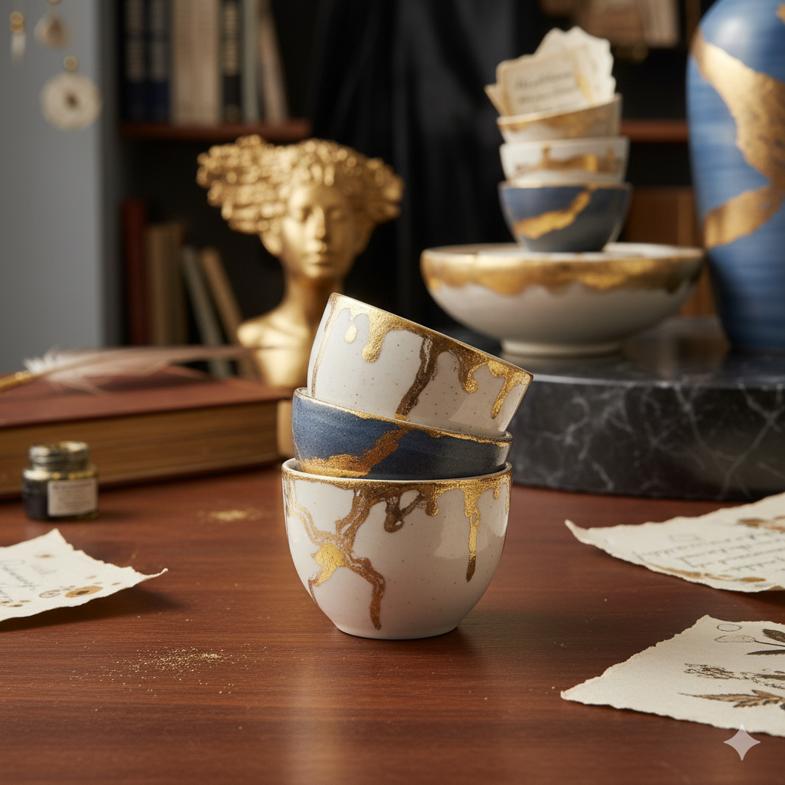
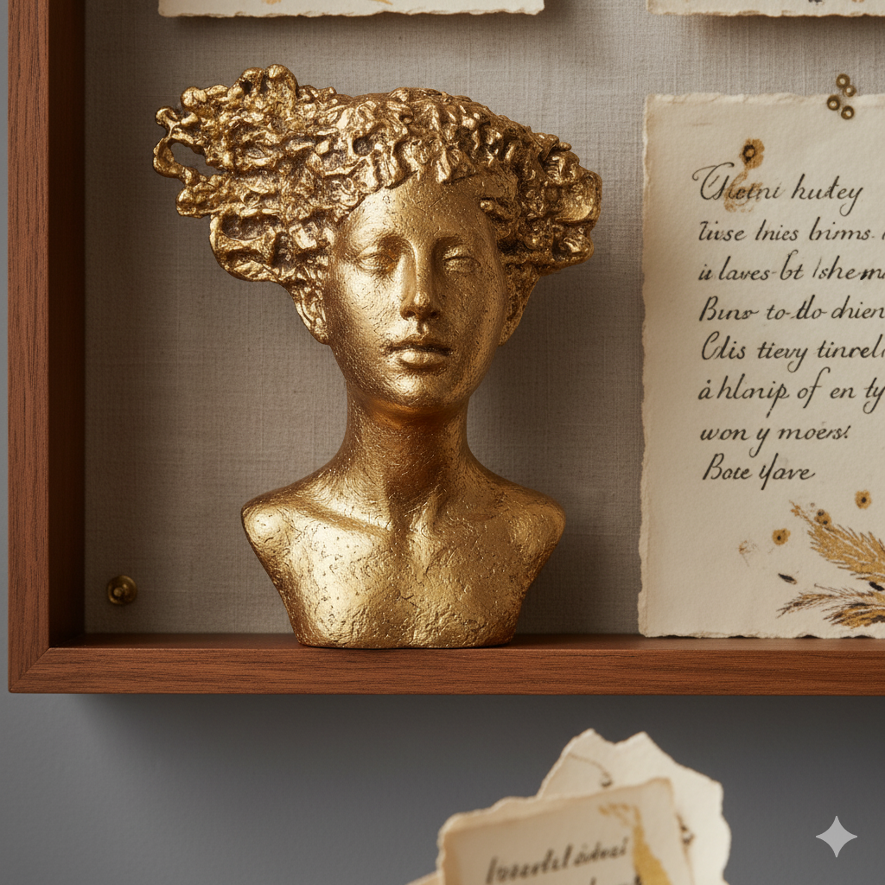
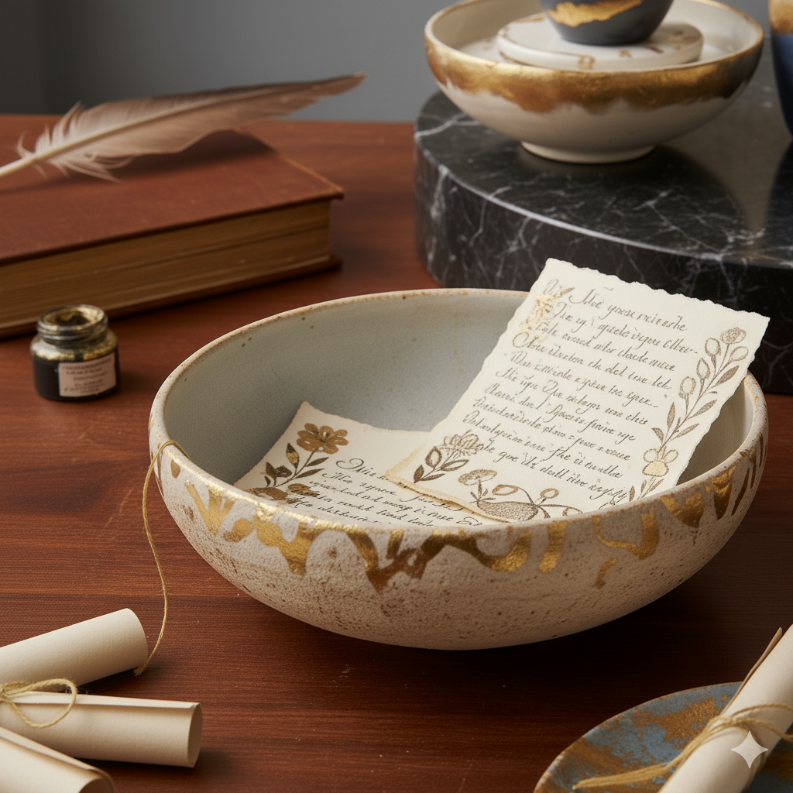

Keramik
Keramik · Lyrik · Bildende Kunst
Aktuelle Werke





Disziplinen
Auf der Drehscheibe geformtes Steinzeug mit matten Glasuren. Inspiriert von Flusskieseln, regendurchtränktem Boden und dem sanften Schimmer des Morgenlichts.
Mehr erfahren →Leise Verse, verwoben mit Feldaufnahmen, Atem und Erinnerung. Herausgegeben als limitierte Letterpress-Editionen und gesprochene Klangpoesie.
Mehr erfahren →Atmosphärische Linienbilder und Druckgrafiken, die Ritual, Wiederholung und die haptische Schönheit des Ateliers im Entstehen festhalten.
Mehr erfahren →Über mich
Aufgewachsen zwischen alpinen Wiesen und pulsierendem Stadtlicht, verwebt Silvia rohe Texturen und warme Töne zu sinnlichen Objekten. Jedes Gefäß, jedes Gedicht und jede Zeichnung lädt dazu ein, innezuhalten und die Poesie des Alltags neu zu entdecken.
Seit über einem Jahrzehnt arbeitet sie in ihrem Atelier in Innsbruck, Tirol — einem Ort, an dem die Stille der Berge auf die Wärme des Feuers trifft.
Kontakt aufnehmen